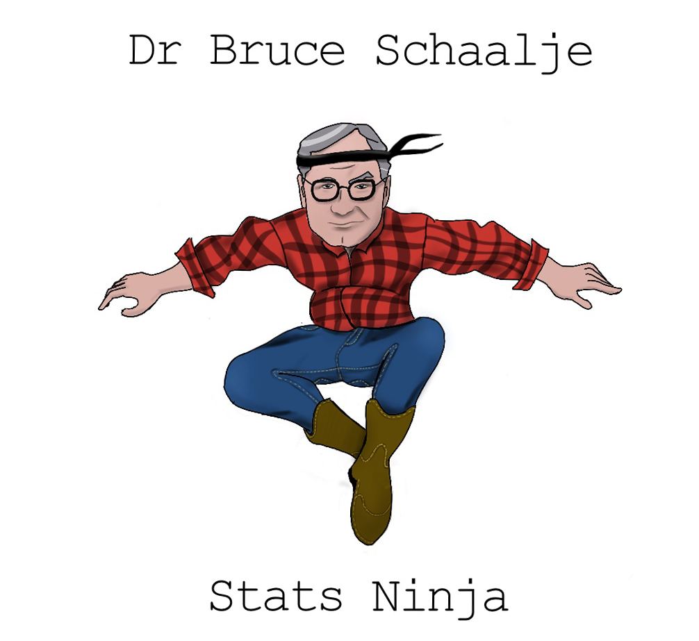

Introduction
I was an undergraduate once. And…let’s just say the statistics force wasn’t strong with this one. At least initially. Given that my innate intellectual prowess was somewhat lacking, I knew I needed a boost to get into graduate school. So, I figured one of the best things I could do, aside from getting a statistics minor (more on that later), was to write an honor’s thesis.
And so I did.
In retrospect, it was kind of a dumb idea. I wasn’t terribly interested in the project. And it required me to collect data from human participants.
I hate inconveniencing people.
Yet here I was, barging into professors’ offices, begging for them to let me inconvenience them and their students to conduct a study.
I still have nightmares about my data collection endeavors.
Well, I finally collected the data I needed and went to my mentor for analysis. Cuz I had no idea what to do with that shiz.
Well, it turns out, neither did my mentor. Unbeknownst to me, the data I collected and the research question I asked required an extremely sophisticated analysis. Neither my mentor nor I had any idea how to even begin to start answering the question.
So, I did what any daunted student would do…I went to the Statistics Jedis themselves. You see, my friends, at my alma mater, we were graced with the presence of a statistics Jedi training facility (translation…a department of statistics). And since I was a padawan in training there anyhow, I went to see one of my professors.

Dr. Bruce Schallje. With silver streaked hair, a continually cocked head, and eyebrows that remained fixed on a distant problem, the guy was brilliant, yet humble. He wore jeans and brown leather boots, always boots. In fact, outside his earshot, we actually called him “Boots.”
As I approached his office, I imagined what it would look like to see raw statistical power manifest. Would he, perhaps, close his eyes and hum gently? Would he sit nomeste-style as insights seeped like mist into his flannel shirt? Or perhaps, his power would manifest by shouting brilliant insights as he pitterpattered on a keyboard like a hacker on a movie. Or maybe it would be like Neo in the Matrix…Dr. Schallje could just look at the data spreadsheet and see the hidden patterns in the data.
But no.
The man graphed the data.
Yeah. He graphed it.
And that, my friends, is where his brilliance really showed. The solution to the problem was, as it turned out, extremely simple. One only needed to plot the data.
Yet at the same time, I thought, “That’s it? I could have done that!”
I have thought over the years about my initial observation of a statistician in his native environment. The absolute mysticism I felt said more about me than about statistics. It was only mystical because I didn’t understand statistics.
Let me say that again, but more tweet-worthy:
Those who treat statistics with reverence or a measure of mysticism only reveal they really fail to understand statistics.
There’s nothing mystical about statistics. That’s both good and bad. Good for you. Bad for me. It’s bad for me because I have lofty and excessive delusions of grandeur. I would love to see myself as a statistical Jedi with superpowers that exceed my own ambitions. Alas, that is not the case. There’s nothing magical or mystical about statistics. It’s actually surprisingly simple.
That really sucks when you want to believe you’re special.
And it wasn’t entirely my fault, I believe. Textbook writers of old have been guilty of making it way more complicated than necessary. Sums of squares, degrees of freedom, rejecting null hypotheses in infinite universes of repeated experiments?…come on, guys! Do we really need to invent or perpetuate convoluted concepts to make ourselves feel smarter than we actually are?
Allow me to burn the veil before you.
Statistics isn’t that complicated.
And that’s where the good news comes in. You, my young Padawan, need not be daunted by the journey before you. Whatever PTSD you suffer from past statistical experience…let it go. Statistics as you knew it is dead to you. Prepare to march upon the enlightened path; one where statistics is not only understandable, but intuitive.
But it does take repetition.
The power of repetition (and my…umm…complicated history with statistics)
My first year at BYU in Provo, UT I took the undergraduate statistics class in the psychology department. The class was taught by Dr. Kim, a Korean man with a very thick accent. It took me six weeks before I finally realized “shima” was “sigma.”
But I can handle accents. The bigger problem was the class took place at 8AM, and the guy’s voice was deep and soothing. The guy could have recorded meditation voiceovers and made millions. The moment his mouth opened, my eyelids grew heavier. And heavier.
And I understood nothing. I was a really bad student. I was so confused it hurt to even try. I didn’t even know what I didn’t know. I didn’t even know how to get help. I was helpless.
The professor felt bad for me, I think. Somehow, I ended up with a passing grade, having not learned a lick of statistics.
Finally, I thought, that nightmare is over!
Oh no, good friends The nightmare had just begun.
About the time I was applying to graduate school, I had a painful realization: I was a horrible candidate. It didn’t make sense to waste hundreds of dollars to apply to graduate school when I likely wasn’t going to be accepted anywhere but Trump University.
So I decided to take another year.
But what could I do in a year and a half that would make a difference?
The thought came before I could dismiss it. And that thought brough cold, dark fear to the depths of my bones.
I could minor in statistics.
Frightening, that.
But, I knew it would be a nice addition to my application. So I did it.
The next year and a half was quite painful. I took a graduate level introductory stats class, followed by a second graduate stats course. I then took the introductory stats class in the statsitics department, along with matrix algebra and statistical computing.
Then something miraculous happened. I was in my experimental design class, which would have been my seventh stats class. I sat near the front, posture sunken, feeling frightened of the next concepts, knowing I’d have to struggle for hours to make sense of what he said.
But something odd happened. I knew what he was saying. And it wasn’t even a struggle to understand him. It was as if I had suddenly awoken from a dream and could speak a foreign language. I knew the language of statistics.
And since then, it hasn’t always been easy, but it’s been exciting.
And I think it’s important to realize that statistics is a language. It’s a different way of thinking about how the world works, one that requires training of the mind.
But there’s a better way
Lemme take a trip into the deep recesses of your thoughts. I assume you are saying to yourself, “Really?? WTF? I don’t have time to take SEVEN stats classes to get it!”
I know. I’m surprised I did.
But, let me assure you it won’t take seven classes. Why? Because you’re way smarter than me. How do I know? I’m a statistician. I’m playing the odds on this one.
More importantly though, there’s a troubling flaw in how statistics has been taught in the past. My first indication was a conversation with Dr. Robert Terry of the University of Oklahoma. The man sported a gray-haired goatee and a relaxed demeanor–the kind “wait ’til the cows come home” demeanor only a southerner can manage.
“There may be a problem with how we teach statistics,” he said.
He grinned, raising an eyebrow, waiting for the question.
“And what problem is that?” I asked.
He turned toward his computer, and opened an image:
[image of Robert’s findings]
What am I seeing?” I asked, cocking my head. Lines and circles splattered across the image in a haphazard pattern. I couldn’t make any sense of it.
“These are visual representations of cognitive maps. You can think of it like a graph, showing how the mind processes statistical information. This image,” he pointed to the left graph, “is how experts think about basic statistical concepts. The right image,” he pointed to the other figure, “is how some of our best students conceptualize statistics.”
He laned back in his chair, grinning smugly. “So, what do you make of it?”
“They’re different.”
“Yes!” He leaned forward, eyes aglow. “They’re not only different. We would expect them to be different. But they share no resemblance with one another.”
“But how?” I asked. “In what ways are they different?”
“Experts think of statistical concepts as interconnected. Students, on the other hand, see these concepts as quite distinct.”
That was in 2008.
For years I have thought about what Robert showed me. Experts. Students. Mind maps. Very different mind maps.
Does this imply we’re teaching statistics incorrectly? Are we misleading students somehow to see things as distinct when, in fact, they’re quite connected?
Why yes, yes we are.
But more on that in a minute.
The Curriculum Hasn’t Changed in 50 Years!
Joseph Rodgers, another of my mentors and eventual collaborators, once gave an address to Division 5 of the American Psychological Association. (This is the stats-nerds/qualitative methods division). In his address, he showed his syllabus from his graduate statistics class from the 1970s.
If one were to review the topics in his syllabus, they would soon discover the standard curriculum hasn’t changed in 50 years.
Let that sink in for a minute.
Although statistics and our understanding of statistics has rapidly evolved over the last 50 years, the way we teach students has not.
Does anyone see a problem with this?
Well, I sure do.
So, the standard curriculum hasn’t changed and students’ mind maps are very qualitatively different from the mind maps of experts.
I think it’s time for a change. How about you?
The General Linear Model Approach
The standard stats curriculum does indeed teach statistical concepts as very distinct: t-test. ANOVA. Regression. Correlation. Chi-square. Distinct concepts! Ne’r dare to confuse them because they are as different as apples and dirt!
Actually, no. They’re not.
It turns out t-tests, ANOVAs, regressions, and correlations are all the same thing. So too are factorial ANOVAs, ANCOVAs, and multiple regressions.
They’re the same freaking thing. They are all what we call the General Linear Model.
Why then do people teach them as distinct?
Beats me!
Okay, well that’s not entirely true. See the fascinating historical note box below….
In the early history of statistics, there were two major powerhouses: Karl Pearson and Ronald Fisher. Karl, the older of the two, was the one who popularized regression and correlation and developed a bunch of really cool procedures. Ronald Fisher, the young whippersnapper had the gall to write a note to a journal where Karl recently published and publicly correct him for a mistake in calculating something called degrees of freedom.
The nerve of Ronny.
That started a long, hateful relationship between the two. Ronald Fisher, who utilized statistics for primarily doing agricultural experiments, realized you could perform a regression with a mathematical shortcut that he called the Analysis of Variance (ANOVA). He knew (as did Karl) that ANOVA was just a different way of computing regression. But, being a spiteful academic, Ron decided to use very different terms for many of the same concepts as Karl did (e.g., instead of calling variance, well, ‘variances’, he called them mean squared errors). Afterall, who wouldn’t fail to give credit to their mortal enemies.
So Ronny, again, an experimental researcher, promoted his own names and mathematical shortcuts for experiments, while Karl continued to use standard terminology. Over time, people began to develop some weird misconceptions about ANOVAs, t-tests, and regression; somehow, ANOVAs could demonstrate causation while regression could not, regression can only be used for numeric variables, and ANOVAs are somehow more appropriate and informative for experiments.
Yeah, no.
They really are the same thing and it’s been quite a tragedy to see people misunderstand them.
That is, perhaps, the most controversial and important distinction between my approach and the standard approach. I believe it’s borderline criminal to teach students these are distinct procedures when they are, in fact, the same thing.
My approach offers several advantages:
- It is easy for student to transition to experts; there’s no need to reshuffle their mind maps.
- When students are taught they’re different, they must invest enormous intellectual resources deciding which analysis to do. By the time they get to interpreting the results, they’re out of resources, so they make poor decisions. When taught using my method, on the other hand, they don’t have to spend hardly any effort deciding which analysis to do. Instead, they invest that mental energy in interpreting results.
- Teaching from a GLM perspective makes the transition to advances statistical procedures intuitive. A mixed model is just a GLM, but with different slopes/intercepts for each cluster. Generalized linear models are general linear models with different distributions of residuals (and different link functions). Structural Equation Modeling is just a bunch of GLMs slapped into a simultaneous equation. Most students taught the traditional way, again, have to make a very dramatic mental shift before they learn these advanced procedures. When taught my way, these advanced methods are minor extensions.
- GLMs do more than test hypotheses. T-tests are called tests for a reason; they are designed to test for statistical significance. Great. What if you’re interested in estimation? Or visualization? Or prediction? Or model comparison? Sorry, standard statistics approach. You can’t handle it! (Or at least, you’re agnostic about how to handle it). The GLM, on the other hand, handles these situations with aplomb.
- Students can use the same analytic framework for all statistical analyses they perform. With a GLM perspective, they merely identify their predictor(s) and their outcome, then visualize, then study estimates, they study probability estimates. With the other approaches, on the other hand, not only do they have to click on different menus (t-test or ANOVA or regression or chi square), but the type of information they must interpret differs from one analysis to another. (Although p-values, the most easily misunderstood statistic of all time, is a notable exception).
I’m sure there’s more, but my pizza just arrived, so I’m going to wrap up this chapter.
My approach isn’t a mere modification, based on personal taste, of the existing statistics curriculum. It is a explicit abandonment of the existing curriculum. Burn that curricular bridge down, I say. Let’s start anew.
This is the “anew.”
My approach is characterized by visualization and a general linear model approach. The whole purpose of my curriculum is to teach students to really understand what their data are trying to say. But, for too long, the standard approach to statistics has stuffed the mouth of our data with cotton balls; it couldn’t speak, couldn’t say your interpretation was wrong, couldn’t reveal interesting patterns you missed.
It could barely breathe.
And now, my friends, we are drowning in a replication crisis–a crisis caused by suffocating our data.
This curriculum is designed to give voice to the data. If you adopt my approach, you will gain insights you will have missed using the standard approach. It will prevent publishing embarrassing errors and yield novel insights.
In short, my approach is about data literacy.
Ya’ll ready to begin?